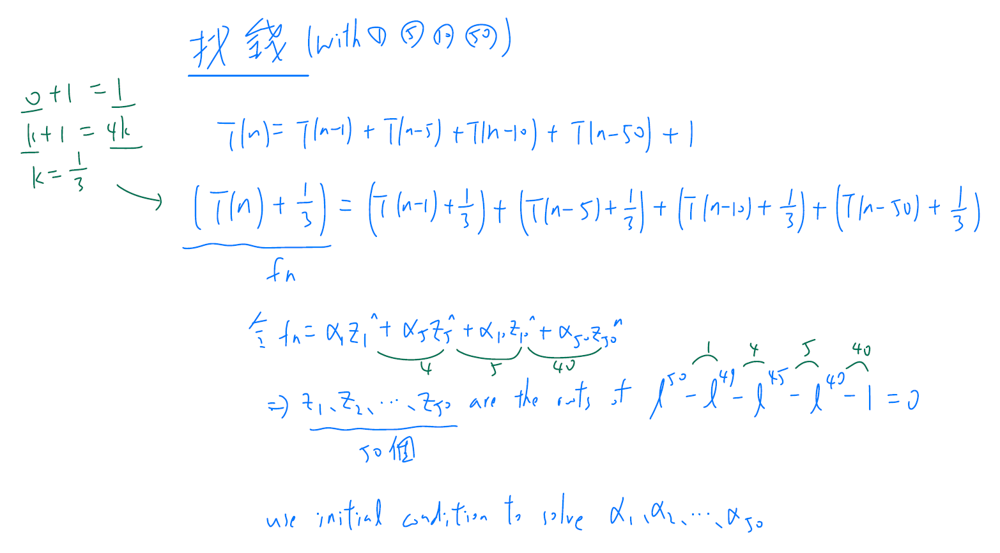
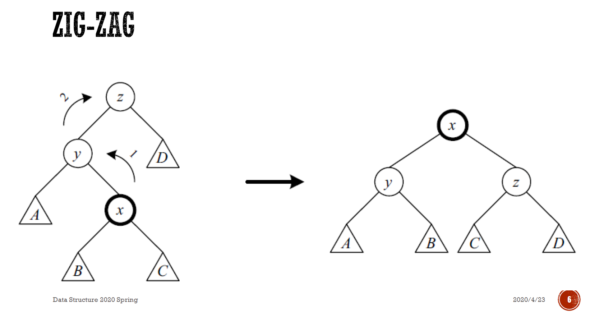
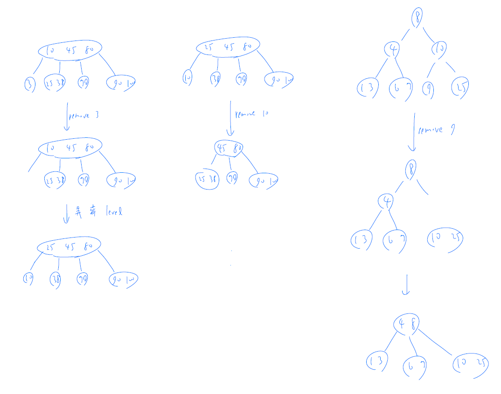
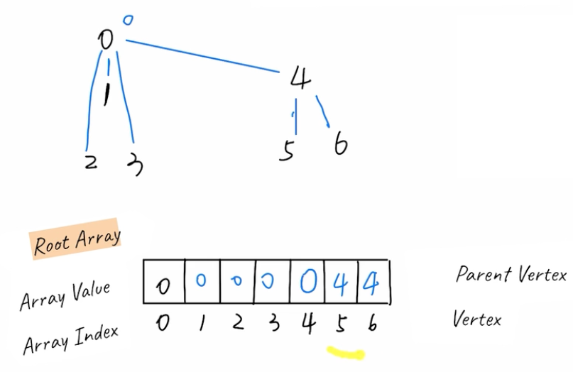
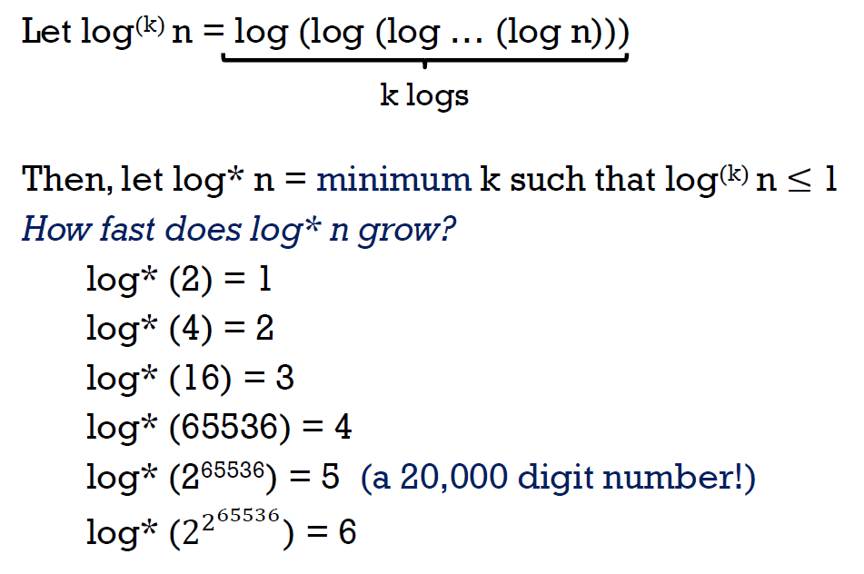

Data Structure¶
- inf: greatest lower bound
- sup: least upper bound
Big-Oh Notation¶
- \(f(x)=\dfrac{h(x)}{g(x)}\)
- \(\lim_{x\to\infty} f(x)\)
- \(\lim_{x\to\infty} \frac{f(x+1)}{f(x)}\)
If \(\lim_{n \rightarrow \infty} \frac{|T(n)|}{\phi(n)}\) exists, then \(\(\lim_{n \rightarrow \infty} \inf_{m \geq n} \frac{|T(m)|}{\phi(m)} = \lim_{n \rightarrow \infty} \frac{|T(n)|}{\phi(n)} = \lim_{n \rightarrow \infty} \sup_{m \geq n} \frac{|T(m)|}{\phi(m)}\)\) Therefore
Properties of Big-Oh Notation¶
Assume all functions are positive.
- Constant factors can be ignored.
- \(kT(n) \in \Theta(T(n)), \forall k > 0\)
- Higher power grows faster
- \(n^r \in O(n^s), \forall r \leq s\)
- Fastest growing term dominates a sum
- \(f(n) \in O(g(n)) \Rightarrow f(n) + g(n) \in \Theta(g(n))\)
- Ex. \(5n^2+27n+1005 \in O(n^2)\)
- Polynomial's growth is determined by leading term.
- If \(f(n)\) is a polynomial of degree \(d\), then \(f(n) \in \Theta(n^d)\).
- Transitivity
- If \(f(n) \in O(g(n))\) and \(g(n) \in O(h(n))\), then \(f(n) \in O(h(n))\)
- Product of asymptotic upper bounds is asymptotic upper bounds for products
- If \(f_1(n) \in O(g_1(n))\) and \(f_2(n) \in O(g_2(n))\), then \(f_1(n)f_2(n) \in O(g_1(n)g_2(n))\).
- Exponential functions grow faster than powers
- \(n^k \in o(b^n), \forall b > 1\)
- Ex. \(n^{100} \in O(1.01^n)\)
- Logarithmic grows slower than powers
- \(\log_b n \in o(n^k), \forall b > 1\) and \(k > 0\).
- Ex. \(\log_2 n \in O(n^{1/3})\).
- All logarithms grow at the same rate
- \(\log_b n \in \Theta(\log_d n), \forall b,d > 1\).
- Sum of the first \(n\) \(r\)'th power grows as the \((r+1)\)'th power
- \(\sum_{k=1}^n k^r \in \Theta(n^{r+1})\), for all \(r > -1\).
- Ex. \(\sum_{k=1}^n k = \frac{n(n+1)}{2} \in \Theta(n^2)\).
The performance of an algorithm may also depend on the exact values of the data, specified by the best case, worst case, and average case performance.
Analyzing an Algorithm¶
- Simple statement sequence
-
Time complexity is \(O(1)\) as long as \(k\) is constant
-
Simple loops
-
Time complexity is \(O(n)\)
-
Nested loops
-
Time complexity is \(O(n^2)\)
-
Loop index does't vary linearily
- h = 1,2,4,8,... until exceeding n
-
\(\log_2 n\) Time complexity is \(O(\log_2 n)\)
-
Loop index depends on outer loop index
- Inner loop executed \(1+2+...+n = \frac{n(n+1)}{2}\) times
- Time complexity \(O(n^2)\)
Let's analyze the time complexity for the following algorithms:
Example 1:
def myFunc(n):
x = 0
y = 0
z = 0
u = 0
v = 0
w = 0
for i in range(n):
for j in range(n):
x = x + i * i
y = y + i * j
z = z + j * j
for k in range(n):
u = w + (5*k + 45)
v = v + k*k*k
w = u+v
return w
Example 2:
def maxSubSum(myArray):
maxSum = 0
idx_start = -1
idx_end = -1
for i in range(0, len(myArray)):
for j in range(i, len(myArray)):
thisSum = 0
for k in range(i,j+1):
thisSum = thisSum + myArray[k]
if thisSum > maxSum:
maxSum = thisSum
idx_start = i
idx_end = j
return maxSum,idx_start,idx_end
\(O(n^3)\)
python list actual implementation¶
pop(2) O(n) at worst case
In Pythons implementation, when an item is taken from the front of the list, all the other elements in the list are shifted one position closer to the beginning. For instance, what pop(2) does is as follows:
Though it causes time for pop operation, this allows the index operation to be \(O(1)\). This is a tradeoff that the Python implementors makes based on how people most commonly use the list data structure. The implementation is optimized so that the most common operations were very fast, sometimes by sacrificing the performance of less common operations.
| Operation | Big-O Efficiency |
|---|---|
| index [] | O(1) |
| index assignment | O(1) |
| append | O(1) |
| pop() | O(1) |
| pop(i) | O(n) |
| insert(i,item) | O(n) |
| del operator | O(n) |
| iteration | O(n) |
| contains (in) | O(n) |
| get slice [x:y] | O(k) |
| del slice | O(n) |
| reverse | O(n) |
| concatenate | O(k) |
| sort | O(n log n) |
| multiply | O(nk) |
| - index[]: ** *0 object |
It is should be clear that the execution time for pop(0) and pop() are O(n) and O(1), respectively.
Some sources of error occurs due to other processes running on the computer which may slow down our code. That is why loop the experiments many times to make the measurement more statistically reliable.
Python Built-in Dictionary Operation Time Complexity¶
If you were the implementor of Python, how do you implement dictionary so that the contain, get item and set item operations all have average case time complexity of \(O(1)\).?
Currently, Python dictionaries are implemented as hash tables (Reference: dictobject.h). We will get into hash tables later in the course, but the following figure might give you some hints on how it works.
The average case time complexity of dictionary operations are as follows:
| Operation | Big-O Efficiency |
|---|---|
copy |
\(O(n)\) |
get item |
\(O(1)\) |
set item |
\(O(1)\) |
delete item |
\(O(1)\) |
contains (in) |
\(O(1)\) |
iteration |
\(O(n)\) |
In the following experiment we compare the performance of the contains operation between lists and dictionaries.
Master Theorem¶
generating function¶

Dynamic Programming¶
- store the solutions
- (T(1)) instead of recursion(T(n-k))
- start from small get big
Bell (W2) - https://www.geeksforgeeks.org/bell-numbers-number-of-ways-to-partition-a-set/
Tree¶
Binary Tree¶
- Binary Tree
- node 0-2 binary tree
- inorder ( or ) binary search tree
- order
- preorder/prefix
- ()
- postorder/postfix
- inorder/infix
- classification
- full/proper/plane
- node 0 or 2
- complete
- up/left 2 bottom/right
- parent of node i is node i//2, unless i=1
- left child of node i is 2i, unless 2i > n
- right child of node i is 2i+1, unless 2i+1 > n
- perfect
- symmetrical for all branches level node (balanced)
- height k \(2^{k+1}-1\) () nodes
- \(k\in \Theta(logn)\) (height=k, nodes=n)
- insert O(height)
- search O(height)
- delete O(height)
- node with 1 child
- bypass
- node with 2 children
- replace with min delete/bypass min
- problem
- height \(\in \Omega(logn)\) (\(O(logn)\) if perfect), worst cast O(n)

AVL Tree¶
- height of left & right node <= 1 binary search tree
- height \(\in \Theta(logN)\)
- upper bound (, smallest)
- lower bound (, biggest)
- rotation
- single rotation
- AVL Treex = h+2
- insert C x = h+1 but unbalanced
- y = h+2
- so as h+2so AVL Tree
- A < y
- A < y < B
- y < B < x
- x < C
- double rotation
- insert B1 B2 () x violateso B1/B2 = h/h-1
- height AVL property
- node
- () double rotation
- otherwise single rotation
- insertion/deletion
- binary search tree
- AVL property; if yes rotation
- insertion rotate ok
- deletion root rotate
- node: h+3 h+2
- node:
- pros
- search \(\in O(logN)\)
- insertion & deletion \(\in O(logN)\)
- height balancing (rotation) constant
- cons
- height
- asymptotically faster but rebalancing costs time
- O(N) faster in the long run
- e.g. Splay tree
Splay Tree¶
- per operation \(\in O(N)\)
- amortized time \(\in O(logN)\)
- good locality
- splay
- x zig-zig
- x zig-zag
- 
- insertion
- node splay
- node
- split
- e.g.
- deletion
- node splay
- delete node subtree
- left subtree max node splay
- right subtree
- e.g.
- amortized cost
- zig-zig
- zig-zag
- simple rotation
- locality
- node
- top-down splay
- bottom-up
- bottom-up
Multi-Way Search Trees¶
2-3-4 Tree¶
- all leaf on same level
- each node has 1/2/3 items
- k items k+1 children
- insertion
- insert leaf node
- look before you leap
- 4 node split
- insert 4 node split insert
- https://www.educative.io/page/5689413791121408/80001
- deletion
- bottom-up
- 
- top-down
- look before you leap
- 2 node split
Red-Black Tree¶
- Red-Black Tree
- represent 2-3-4 tree as binary tree

- properties
- root black
- ==leaf NIL==
- red
- path node
- 2-3-4 leaf nodes level
- max height \(2log(n+1)\)
- https://www.codesdope.com/course/data-structures-red-black-trees/
- https://doctrina.org/maximum-height-of-red-black-tree.html
- W4-2
- operation 2-3-4 Red-Black
AA Tree¶
- interactive visualization
- Red-Black Tree but left-child can't be red
- level
- leaf = 1
- red = parent's level
- black = parent's level - 1

- level ( red)
- operations
- skew
- remove 1 left horizontal
- add 1 right horizontal
- split
- remove consecutive right horizontal
- deletion
hash¶
- hash function
- \(h(k)=k\%m\)
- m2^n bc /2^n n digit
- m =
- k = m
- e.g. key%3=0m=18 6
- key string
- sum of ASCII
- len = 8 127x8 slot
- separate chaining
- slot linked list
- collision
- insertion O(1)
- deletion/search O()
- open addressing
- collision relocate
- \(h_i(k)=(h(k)+f(i))mod\space m\)
- linear probing
- \(h_i(k)=(k+i)mod\space 10\)
- collision
- cluster
- quadratic probing
- \(h_i(k)=(k+i^2)mod\space 10\)
- double hashing
- \(f(i)=i\cdot h_2(k)\)
- \(h_2(k)=R-(k\space mod\space R)\)
- bc \(h_2(k)=0\)
- collision
- \(h_i(k)=(k+i(R-(k\space mod\space R)))mod\space m\)
- e.g. \(h_i(k)=(k+i(7-(k\space mod\space7)))mod\space 10\)
- \(gcd(m,h_2(k))=1\)
- e.g. R, m = prime AND R < m
- deletion
- delete delete hash
- insert
heap (priority queue)¶
bineary heap¶
- complete binary tree
- all levels are filled except leaf
- fill
- \(h\in O(logn)\)
- MinHeap: parent key <= child key
- MaxHeap: parent ket >= child key
- insertion
- insert ( leaf ) percolate up
- deletion
- delete root (min) bottom level node root percolate down
- children
- s.t. children children
-

- merge
- root percolate down
- bottom-up construction
- o(n)
- array representation
- index start from 0
- left child = 2i+1
- right child = 2i+2
- i = odd left child
- i = even right child
binomial heap¶
- height = k
- \(2^k\) nodes
- roots singly linked list
- root k binomial tree
- min ()
- n nodes
- order
- n nodes
- \(19 = (10011)_2\) \(B_4\) + \(B_2\) + \(B_1\)
- \(k \leq \lfloor{log(n)}\rfloor\)
- \(2^k\leq n<2^{k+1}\) \(log_2(n)-1 < k\leq log_2(n)\)
- at most \(k+1\) (\(B_0\)~\(B_k\)) $\leq \lfloor{log(n)}\rfloor+1 $ tree
- union
- root
- order merge repeat
- order
- delete min
- root union rest
- \(\in O(log(n))\)
- decrease key
- key order (like percolate up for minheap) to match heap order (parent < child)
- \(\in O(logn)\)
- deletion
- key decrease -inf delete min union
- \(\in O(logn)\)
- insertion
- worst case \((111...11)_2+1\) \(log_2n\) time
- union(x,H)
- construction
- sequence of inserts
- \(\in O(n)\)
comparison¶
Fibonocci heap¶
- roots of trees circular linked list
- degree
- root
- t(H)
- m(H) marked
- \(\phi(H)=t(H)+2m(H)\) potential function
- insertion
- min
- amortized cost O(1)
- actual cost O(1)
- potential += 1
- t(H) += 1
- m(H) += 0
- union
- update min (among circular linked list roots)
- amortized cost O(1)
- actual cost O(1)
- potential += 0
- t(H) += 0
- m(H) += 0
- delete min
- delete min O(1)
- min children root list O(D(n)))
- consolitdate O(t(H)+D(n)) (bc worst case t(H)+D(n) )
- root degree
- root
- amortized cost O(D(n))
- actual cost O(D(n)+t(H))
- D(n) = max degree of Fibonocci heap with n nodes
- t(H) = tree
- potential += O(D(n)-t(H))
- t(H) += (D(n)+1-t(H))
- t(H)
- max D(n) + 1
- D(n-1) <= D(n)
- n-1 node max degree <= n
- degree 0, 1, 2, ..., D(n) max D(n)+1
- m(H) += 0
- if insertion, delete-min & union only contains binomial tree
- so \(D(n)\leq\lfloor log_2n\rfloor\)
- decrease key (x)
- parent of x = p[x]
- case 0 min-heap
- case 1violate min-heap property and p[x] unmarked
- x p[x]
- mark p[x]
- root list
- unmark x
- update min
- case 2violate min-heap property and parent marked
- x p[x]
- x root list
- x
- while parent is marked, cut off link with parents, root list
- elif unmarked mark it
- amortized cost O(1)
- c =
- actual cost O(c)
- potential += 4-c
- t(H) += c
- m(H) += 1-(c-1) = 2-c
- c+2(-c+2) = 4-c
- deletion
- smallest Fib heap
- size n Fib heap max degree
- degree d Fib heap
Disjoint Set¶
also called Union-Find
https://leetcode.com/explore/learn/card/graph/618/disjoint-set/3881/
Implementation¶
methods:
- find: find the root of a key
- union: unite the sets of the 2 keys
implementations:
- quick find: in the array, store each's root node
- \(O(1)\) find
- \(O(N)\) union
- merge y's tree into x by setting the root of all y's tree's nodes to x's root
- quick union: in the array, store node's parent
- 
- \(O(N)\) find
- \(O(N)\) union
- merge y's tree into x by setting the parent of all y's root to x's root
- union by rank: quick union but always move short tree under tall tree when doing union

- \(O(\log N)\) find
- \(O(\log N)\) union
Quick Find:
class UnionFind:
def __init__(self, size):
self.root = [i for i in range(size)]
def find(self, x): # O(1)
return self.root[x]
def union(self, x, y): # O(N)
rootX = self.find(x)
rootY = self.find(y)
if rootX == rootY:
return
for i in range(len(self.root)):
if self.root[i] == rootY:
self.root[i] = rootX
def is_connected(self, x, y):
return self.find(x) == self.find(y)
Quick Union:
class UnionFind:
def __init__(self, size):
self.parent = [i for i in range(size)]
def find(self, x): # O(N)
while x != self.parent[x]:
x = self.parent[x]
return x
def find(self, x): # recursive version with path compression
if x == self.parent[x]:
return x
# set all the node's parent along the way to root
self.parent[x] = self.find(self.parent[x])
return self.parent[x]
def union(self, x, y): # O(N)
rootX = self.find(x)
rootY = self.find(y)
if rootX == rootY:
return
self.parent[rootY] = rootX
def is_connected(self, x, y): # O(N)
return self.find(x) == self.find(y)
Union by Rank:
class UnionFind:
def __init__(self, size):
self.parent = [i for i in range(size)]
self.rank = [1] * size
def find(self, x):
if x == self.parent[x]:
return x
self.parent[x] = self.find(self.parent[x])
return self.parent[x]
def union(self, x, y):
rootX = self.find(x)
rootY = self.find(y)
if rootX == rootY:
return
if self.rank[rootX] > self.rank[rootY]:
self.parent[rootY] = rootX
elif self.rank[rootX] < self.rank[rootY]:
self.parent[rootX] = rootY
else:
self.parent[rootY] = rootX
self.rank[rootX] += 1
def connected(self, x, y):
return self.find(x) == self.find(y)
Introduction¶
- equivalence relation
- equilavence relation
- x
- x y y X
- x y y z x z
- set
- set
- name of set
- union
- set
- find root
- root
- if root root up-tree
- node
- e.g.
- up-tree
- root disjoint set
- implementation
- array
- root index
- root -1
- weighted union
- tree s.t.
- height h min \(2^h\) nodes
- a tree with h=k+1 must be formed by 2 trees with h=k
- h=k + h=k-1 h=k
- \(h \leq log_2n\)
- find
- O(max height) = O(\(log_2n\))
- intuition
- find
- ranked union
- initial rank = 0
- union root rank
- rank root rank
- rank
p[x] = y,r(y) += 1
- rank=k+1 root 2 rank=k
- rank r min \(2^r\) nodes
- \(rank \leq log_2r\)
- weighted union
- parent rank > child rank
- x y rank x y x y descendents \(\frac{n}{2^r}\) rank=r nodes (rank lemma)
path compression¶
- root
- method
- use union by rank
- find-set(x)
- if x != p[x] i.e. x root
- p[x] = find-set(p[x]) i.e. x parent recursive x root nodes root
- m find's time complexity with path compression \(O((m+n)log^*n)\)
- path compression rank gap
- x root root rank parent rank
- good & bad nodes
- good, if
- x root
- p[x] root
- rank_block(x) < rank_block(p[x])
- rank
- bad, otherwise
- visit \(O(mlog^*n)\) good nodes during m finds
- \(log^*n+2\in O(log^*n)\) good nodes
- \(log^*n\) rank block
- root
- child of root
- visit \(O(n(log^*n+1))\) bad nodes
- p[x] root
- rank_block(x) = rank_block(p[x])
- \(log^*n+1\) rank block
- \(B_0,...,B_{log^*n}\)
- rank block visit n
- rank block node visit \(2^k\)
- visit | path compression root r(p[x]') >= r(p[x])+1 r(p[x])+=1 at least for each operation \(2^k\) visits p[x] rank blockx good node
- \(B_k\) \(2^k\)
- rank block \(\displaystyle\sum_{r=k+1}^{2^k}\frac{n}{2^r}\leq\sum_{r=k+1}^{\infty}\frac{n}{2^r}=\frac{n}{2^k}\) nodes
- \(B_k=\{k+1,k+2,...,2^k\}\)
- rank lemma: \(\frac{n}{2^r}\) rank=r nodes
- \(log^*n\)
- = \(k\) s.t. \(log^kn\leq 1\)
- 
- \(log_2()\)
- rank block
- rank_block(x) = \(log^*x\)

Tarjan's analysis of path compression¶
- Ackermann's function \(A_k(r)\)
- \(A_k(r)=A_{k-1}^r(r)\)
- apply \(A_{k-1}\) r times to r
- \(A_0(r)=r+1\)
- \(A_1(r)=A_0^r(r)=r+r=r\times2\)
- r += 1 r
- \(A_2(r)=A_1^r(r)=r2^r\geq2^r\)
- r *= 2 r
- \(A_3(r)=A_2^r(r)\geq2^{2^{2^{2^{.^{.^{.^{.^{.^{2^{2^r}}}}}}}}}}\geq2^{2^{2^{2^{.^{.^{.^{.^{.^{2^{2}}}}}}}}}}\) (r 2 tower)
- e.g.
- \(A_4(2)=A_3(A_3(2))=A_3(A_2(A_2(2)))=A_3(A_2(A_1(A_1(2)))))=A_3(A_2(A_1(4))))=A_3(A_2(8)))=A_3(2048))\geq\) a tower of 2048 2
- inverse Ackermann's function \(\alpha(n)\)
- \(\alpha(n)\) = min k s.t. \(A_k(2)\geq n\)

- \(\alpha\)(a tower of 2048 2s) = 4 << \(log^*\)(a tower of 2048 2s) = 2048
- rank gap \(\delta(x)\)
- \(\delta(x)\) = max k s.t. \(rank(p[x])\geq\) \(A_k(rank(x))\)
- \(\delta(x)\geq 1\) \(r(p[x])\geq A_1(r(x))=2r(x)\)
- \(\delta(x)\geq 2\) \(r(p[x])\geq A_2(r(x))=r(x)2^{r(x)}\)
- \(\delta(x)\geq 3\) \(r(p[x])\geq A_3(r(x))\geq\) a tower of r(x) 2s
- \(\delta(x)\) but never over time
- x non-root r(x) while r(p[x])
- if \(r(x)\geq2\), then \(A_{\alpha(n)}(2)\geq n\geq r(p[x])\geq A_{\delta(x)}(r(x))\) \(\alpha(n)\geq \delta(x)\)
- \(A_{\alpha(n)}(2)\geq n\) by def of inverse Ackermann's function
- \(r(p[x])\geq A_{\delta(x)}(r(x))\) by def of rank gap
- good & bad nodes
- bad, if
- x is not a root
- p[x] is not a root
- rank[x] >= 2
- x rank gap root ancestor y
- \(\delta(x)=\delta(y)\)
- good, otherwise
- cost \(\in O((m+n)\alpha(n))\)
- cost = total visits of nodes = total visit of good nodes + total visit of bad nodes
- good visits \(\in O(m\alpha(n))\)
- bad visits \(\in O(n\alpha(n))\)
leftlist heap¶
- interactive visualization
https://people.ksp.sk/~kuko/gnarley-trees/Leftist.html - binary heap property
- minheap property
- children
- leftheap property
- NPL(leftchild) >= NPL(rightchild)
- swap children
- NPL null path length
- 0 or 1 child node
- NPL = 0
- NPL(Null) = -1
- only 1 child left Null
- right path
- NPL(x) = NPL(x.rightchild) + 1
- x has 0 child
- 0 = -1 + 1
- x has 1 child
- 0 = -1 + 1
- x has 2 children
- NPL(x) = min(NPL(left), NPL(right)) + 1 = NPL(right) + 1
- NPL -= 1
- NPL -= <1
- path NPL=0 right
- pathpath
- merge
- x y pointer root
- stack right child
- 2. pointer null ( y)
- y x node
- leftheap property, swap if needed
- stack node right child NPL

- cost \(\in O(logn)\)
- right path \(\in O(logn)\)
- right child
- path NPL(left)>=NPL(right)
- right path = h path >= h \(n\geq 2^{h+1}-1\) \(h\leq log_2(n+1)-1\) max num of stack \(\in O(2logn)\in O(logn)\) cost \(\in O(logn)\)
- insertion
- merge leftlist heap with the node
- deletion
- merge left & right subheaps
- so merge, insert, delete \(\in O(logn)\)
skew heap¶
- interactive visualization
- binary heap property
- minheap or maxheap property
- no NPL
- so right path \(\in O(logn)\)
- merge
- leftlist heap but stack swap at every step
- NPL
- amortized cost \(\in O(logn)\)
- size = subtree nodes
- heavy node
- \(size(x) > size(\frac{p[x]}{2})\)
- light node
- \(size(x) \leq size(\frac{p[x]}{2})\)
- 2 children with 1 heavy child light
- 2 light children
- potential function \(\phi\) = num of right heavy nodes
- stack
- light node size *= 2 at least log(n) light nodes
- size = 1 size = n
- actual cost = 1
- swap heavy \(\Delta\phi\) <= 1
- amortized cost = 1 + 1 = 2
- heavy node right heavy node swap left heavy mode
- actual cost = 1
- \(\Delta\phi\) = -1
- amortized cost = 1 - 1 = 0
- amortized cost = 2log(n) + 0 \(\in O(logn)\)
Dijkstra's Algorithm¶